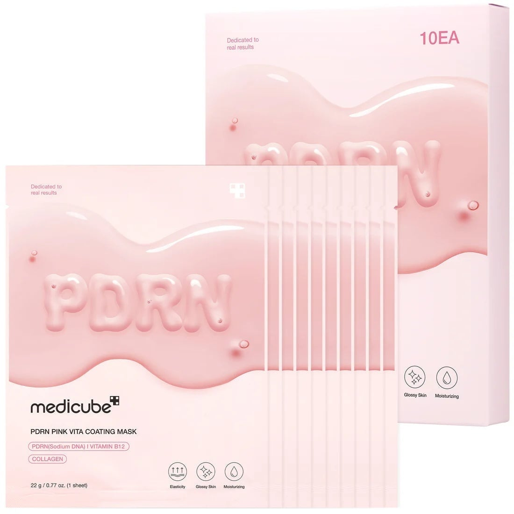
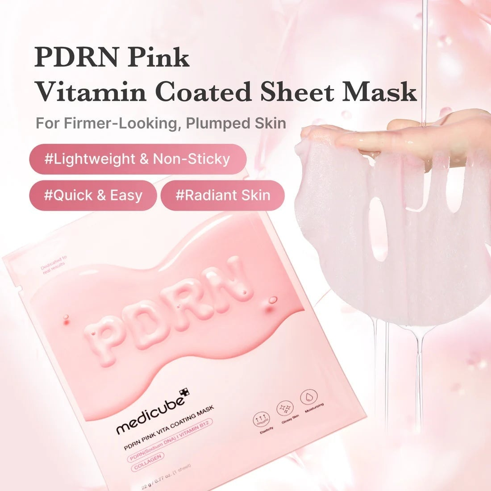
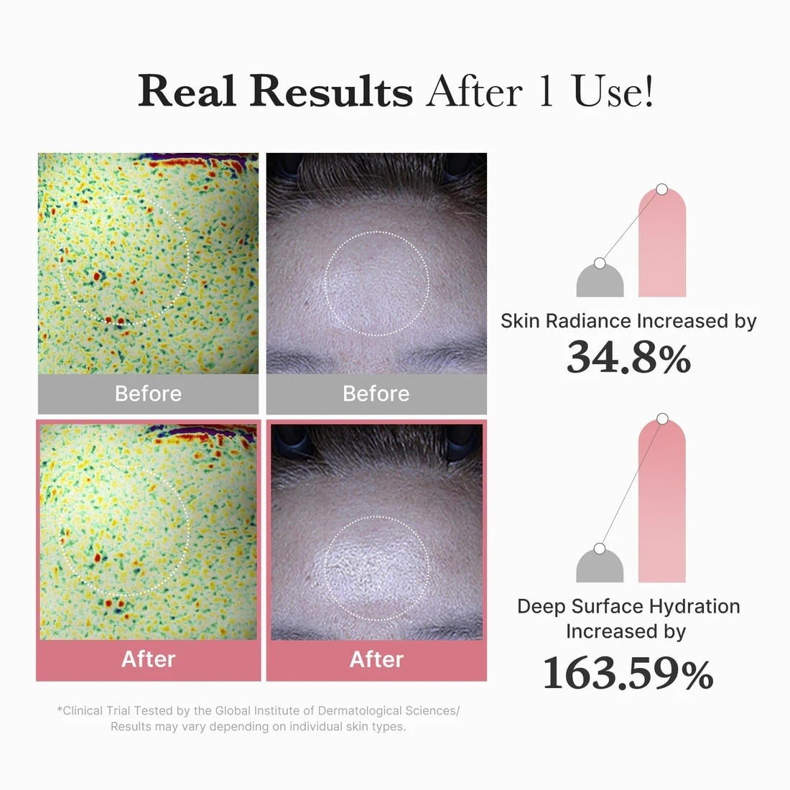
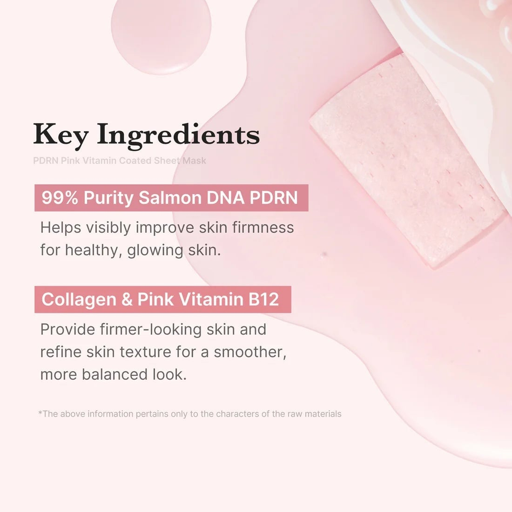
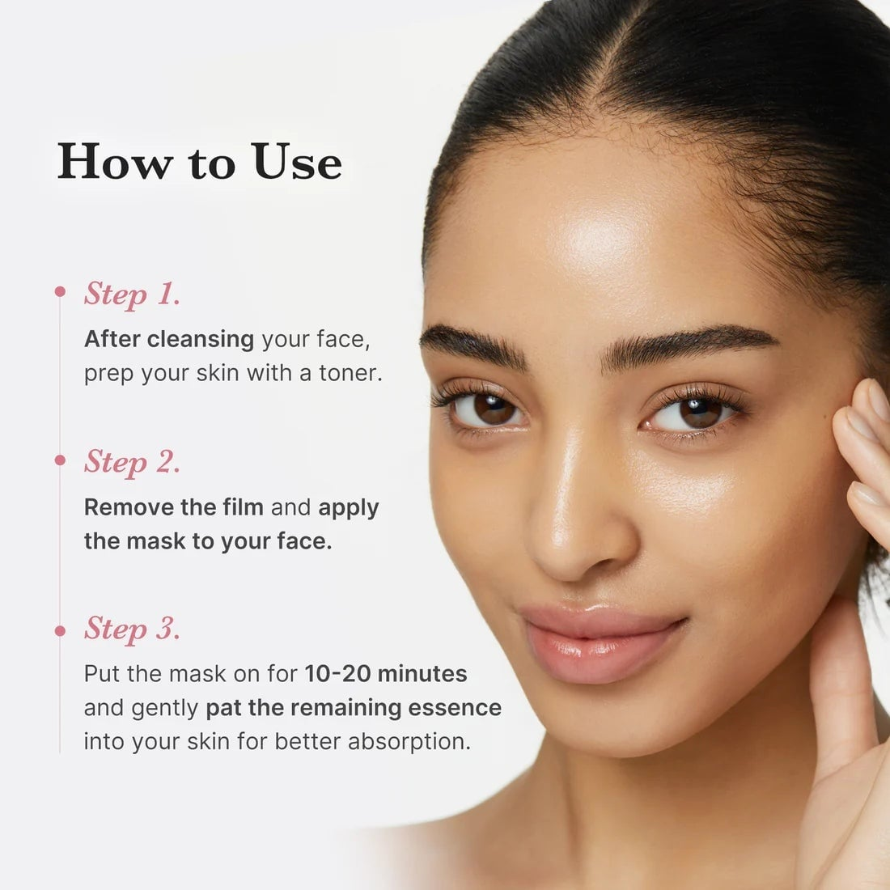

<div> <table style="border-collapse: collapse; width: 99.9809%;" border="1"><colgroup><col style="width: 49.9522%;"><col style="width: 49.9522%;"></colgroup> <tbody> <tr> <td> <div><span style="font-size: 14pt; color: #000000;"><strong>Medicube Masca de fata cu PDRN, colagen si vitamina B12</strong></span></div> <div><span style="font-size: 14pt; color: #000000;"><strong>22g</strong></span></div> <div><span style="font-size: 14pt; color: #000000;">Pachetul Medicube PDRN Pink Vita Coating Mask ce contine 10 bucati de masca, cu un ambalajul elegant, in nuante delicate de roz, evidentiaza beneficiile cheie ale tratamentului: imbunatatirea elasticitatii, oferirea unui efect de &bdquo;glossy skin&rdquo; si o hidratare profunda a tesuturilor.</span></div> </td> <td></td> </tr> <tr> <td></td> <td><span style="font-size: 14pt; color: #000000;">O imagine de prezentare ce ilustreaza masca din servetel ultra-fina si bine imbibata in esenta roz. Textura sa usoara si non-lipicioasa promite o aplicare rapida si confortabila, fiind solutia ideala pentru a obtine un ten vizibil mai ferm, revitalizat, plin de volum si radiant.</span></td> </tr> <tr> <td><span style="font-size: 14pt; color: #000000;">Studiile arata o crestere considerabila a luminozitatii pielii cu 34,8% si o imbunatatire extraordinara a hidratarii de profunzime cu 163.59%, confirmand eficienta dermatologica avansata a produsului.</span></td> <td></td> </tr> <tr> <td></td> <td><span style="font-size: 14pt; color: #000000;">ADN de somon PDRN cu puritate de 99% pentru fermitate, alaturi de colagen si vitamina B12. Aceasta combinatie sinergica rafineaza vizibil textura pielii, oferindu-i un aspect neted, echilibrat si perfect uniformizat.</span></td> </tr> <tr> <td><span style="font-size: 14pt; color: #000000;">Ghid simplu, in trei pasi ce explica modul corect de utilizare a mastii. Dupa curatare si tonifiere, se indeparteaza pelicula protectoare si se aplica servetelul pe fata timp de 10-20 de minute, masand la final excesul de esenta pentru o absorbtie deplina.</span></td> <td></td> </tr> </tbody> </table> </div>